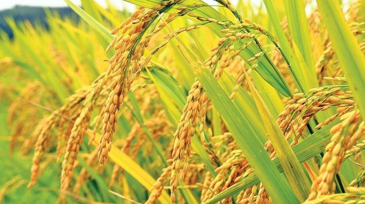

বোরো ধান বা বাসন্তিক ধান বাংলাদেশের ধানের একটি জাত। এটি একটি শীতকালীন ধান ও রবিশস্য। উৎপাদনের সময়ের উপর নির্ভর করে ধানের প্রধান যে তিনটি শ্রেণিভেদ করা হয়, বোরো তাদের অন্যতম। বোরোর মৌসুম শুরু হয় আমনের মৌসুম শেষ হবার পরে। ধান রোপণ শুরু হয় বাংলা কার্তিক (অক্টোবর-নভেম্বর) মাস থেকে এবং ধান কাটা চলে বাংলা বৈশাখ জ্যৈষ্ঠ (এপ্রিল-জুন) মাস পর্যন্ত। হেমন্তকালের শুরু থেকে গ্রীষ্মকালের মাঝামাঝি পর্যন্ত এই ধানের সময় চলে এবং এই ধানের মূল ফলন বসন্তকালে হয় বলে একে বাসন্তিক ধান বলেও ডাকা হয়। ভারতে বোরো ধানকে বৈশাখী ধান নামেও ডাকা হয়। বোরো ধান যে সময়ে জন্মায় সে সময়ে বৃষ্টিপাত সাধারণত: কম হয়। তাই বোরো ধান সেচের উপরে বহুলাংশে নির্ভরশীল। বোরো ধান মুলত বেলে মাটিতে কম উৎপাদন হয় এ ধানের ফলন অন্যান্য আউশ, আমন ধানের চেয়ে বেশি। কারণ এইসময় আকাশে মেঘলা কম থাকে এবং বেশি সূর্যালোক পাওয়ার কারণে এর ফলন অনেক বেশি। এই বোরো ধানের ফলন জাত ও অঞ্চল ভেদে ২০-২৮ মণপ্রতি বিঘা। হেক্টরে হিসাব করলে তা দাঁড়ায় ৪.৫-৮ টন পর্যন্ত।